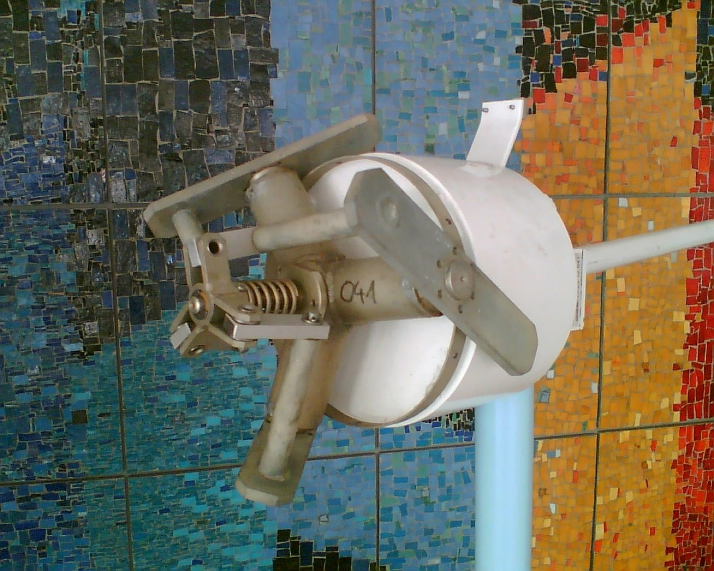
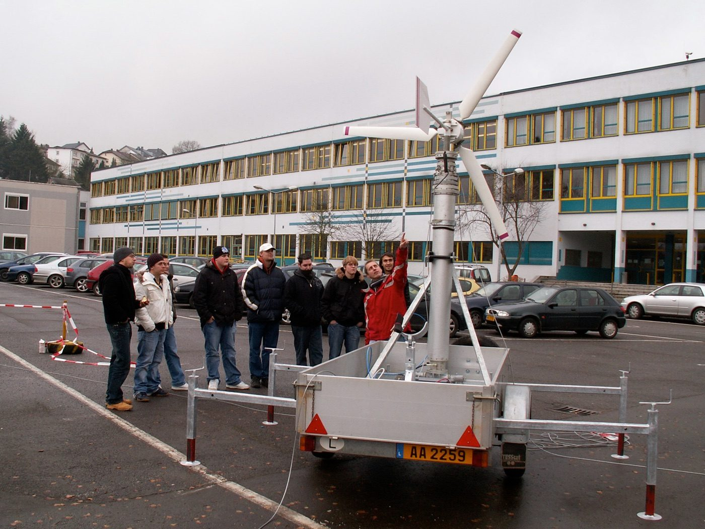
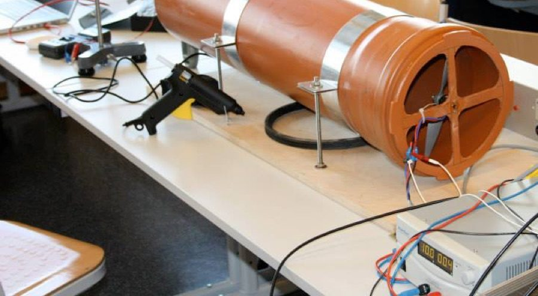
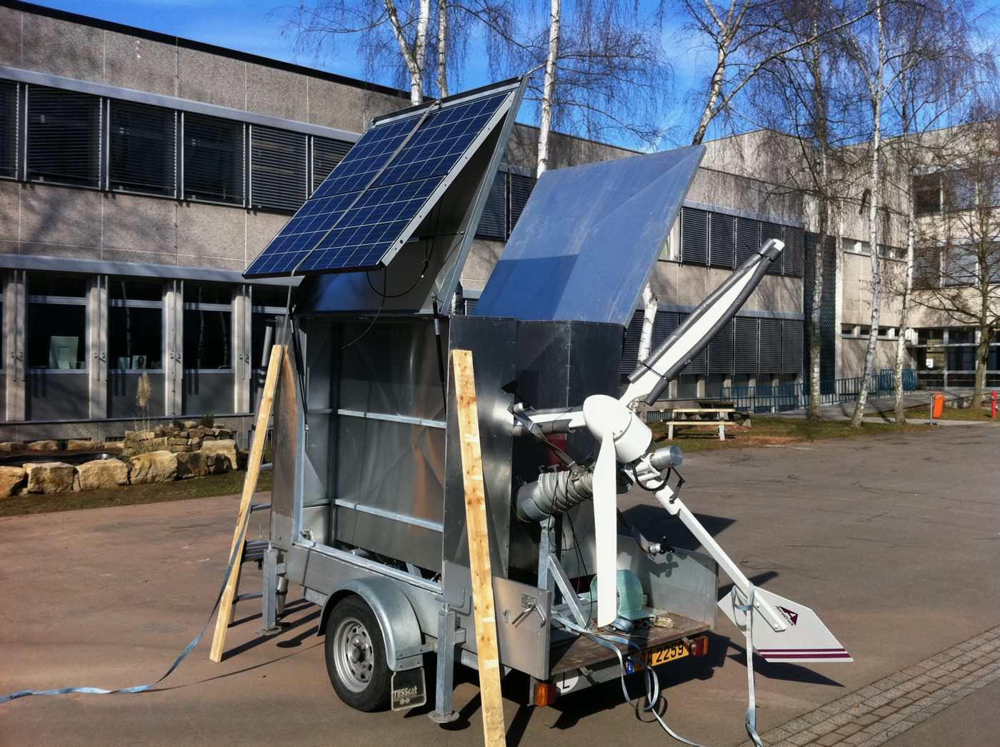
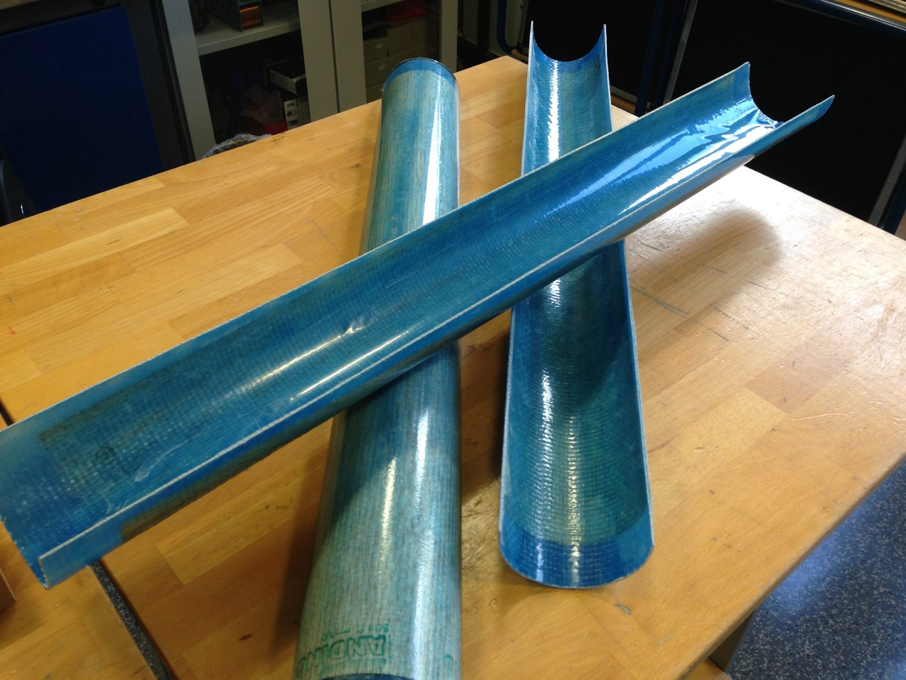
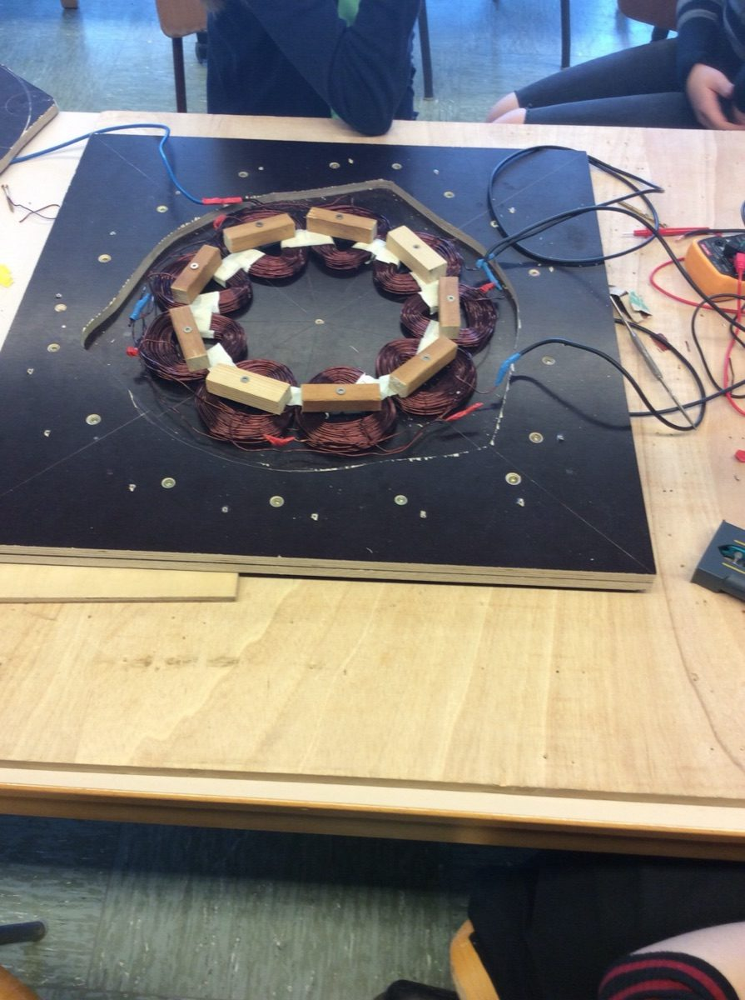
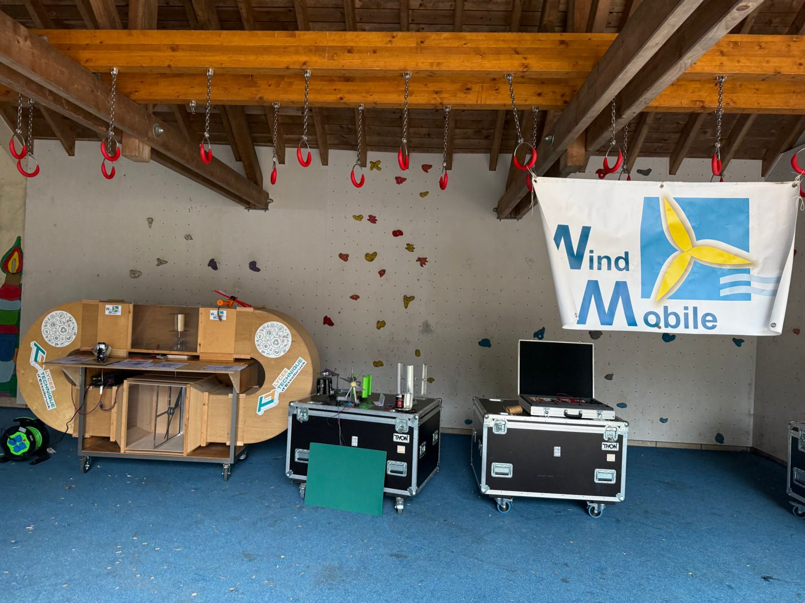
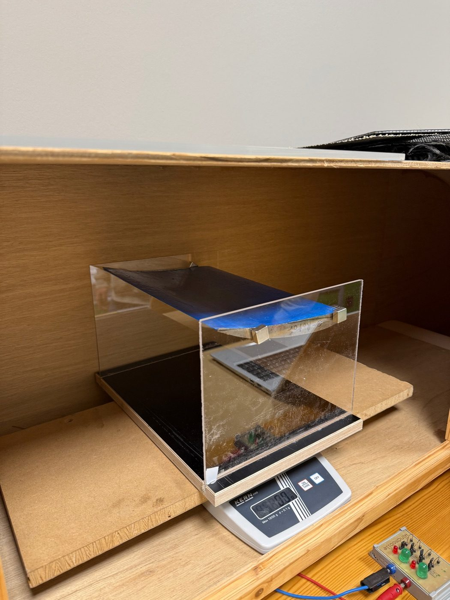
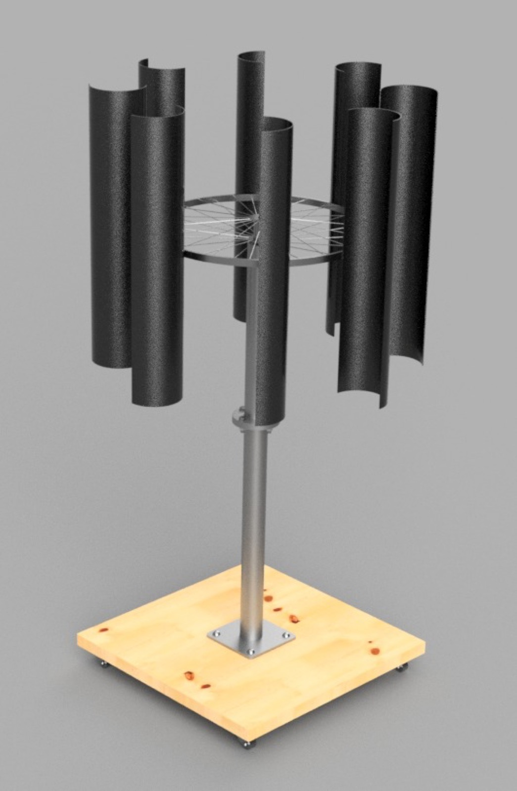
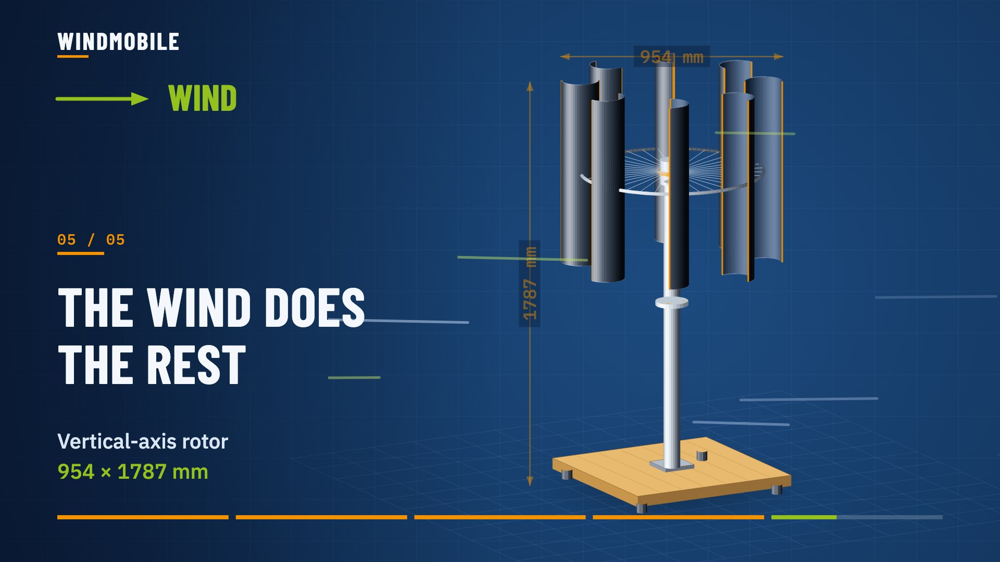

ERASMUS WORKSHOP · ENERGY TOUR · 18 NOVEMBER 2026
Lycée Technique d’Ettelbruck
Students build, students teach
Next: small teams rotate through power bike, wind tunnel and machines explained
2005 – 2007


2010 – 2014


2014 – 2025


2025 – 2026


Today


ERASMUS WORKSHOP · ENERGY TOUR · 18 NOVEMBER 2026
Lycée Technique d’Ettelbruck
Students build, students teach
Next: small teams rotate through power bike, wind tunnel and machines explained